A few weeks ago, the MĀKI team invested in a new piece of kit — a CHIRP MEGA SI GPS scanner — for advanced underwater scanning and mapping. To properly test this equipment, we conducted field trials at Lake Ngaroto.
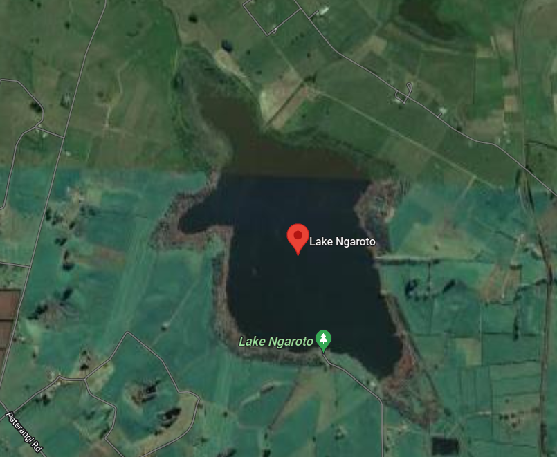
Background on Lake Ngaroto
Lake Ngaroto is the largest of the Waipa peat lakes. It is located south of Hamilton city and north-west of Te Awamutu. The lake is hypertrophic — meaning it suffers poor water quality with a very high level of nutrients, over abundance of microscopic algae (including algae-blooms), lots of suspended sediment, and low water clarity.
Since 1995, Waipa District Council has implemented restoration efforts, including fencing marginal land strips and replanting native vegetation around the lake's perimeter, despite the primarily pastoral catchment surrounding it.
The Scanning Process
Given the lake's 108-hectare area and motorboat restrictions, the team employed a MĀKI inflatable e-kayak equipped with the sonar scanner. The sonar scanner was mounted at the side of the vessel and a MĀKI autopilot e-kayak control was used as the main method of controlling the vessel.
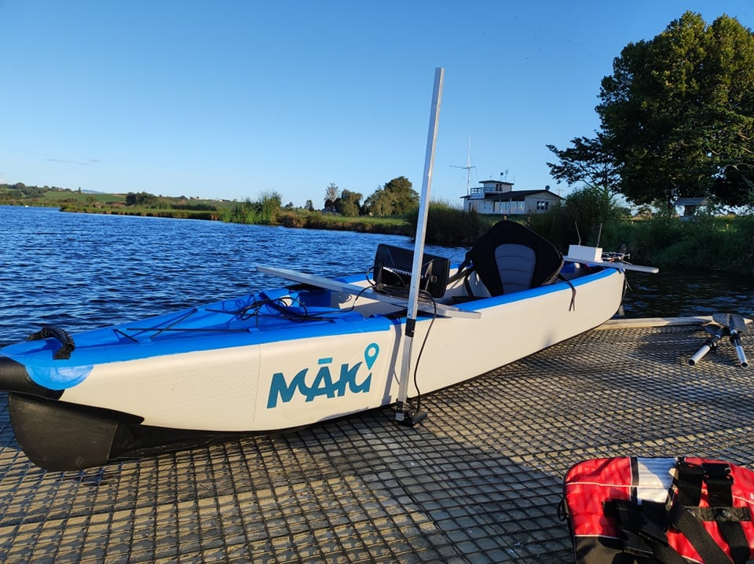
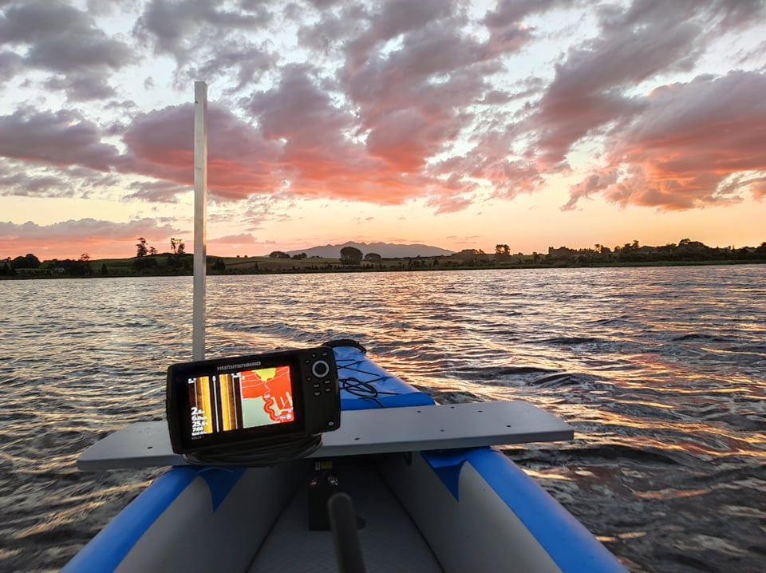
Day 1: Scanning commenced from the lake's northern end under mild wind conditions. Large colourful fish (presumed Koi Carp) were visible, some appearing on the kayak's FPV camera feed.
Day 2: Middle-section scanning occurred with stronger winds (15–18 km/hr), which presented no operational challenges. An interesting 55-metre-long structure of unknown origin was discovered, which the team chose not to disturb.
Day 3: Final scanning covered the southern lake section under favourable weather. The team identified what appeared to be sunken boats based on sonar imagery shapes.
Topographical Layout & Results
As expected, the deepest part of the lake is in the middle with the current depth at 3.2m. The eastern shoreline demonstrated steeper gradients compared to western areas. Combined data analysis produced comprehensive bathymetric mapping and 3D modelling.
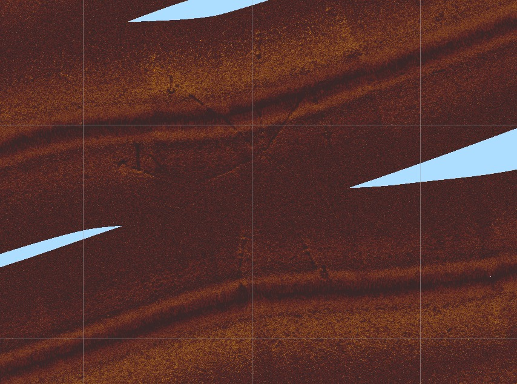
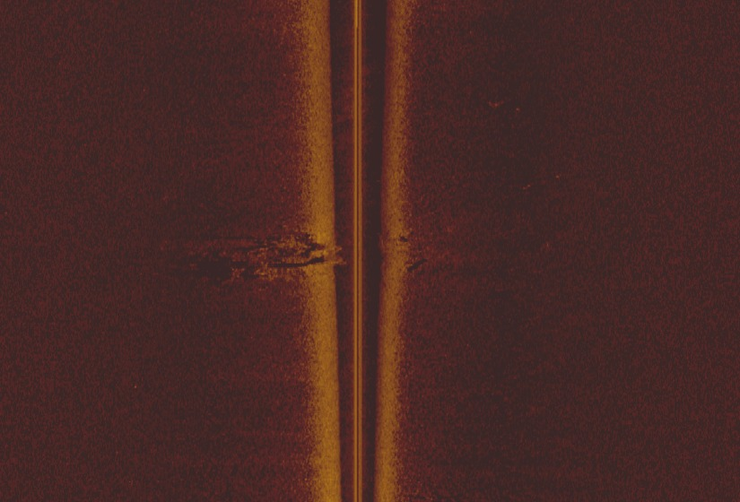
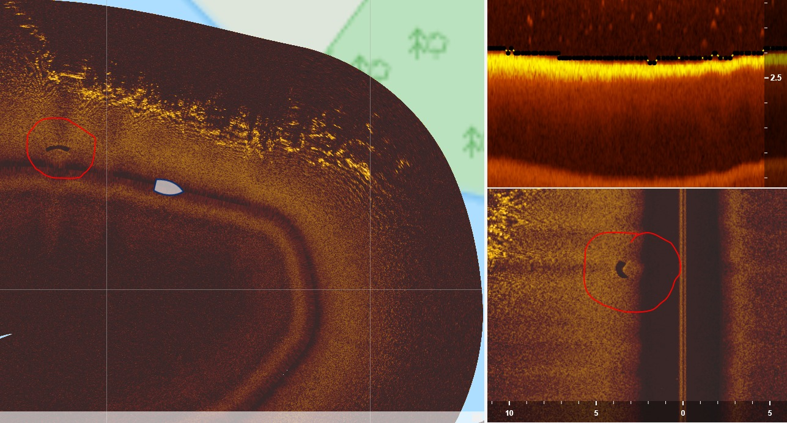
Side-Scanning Results
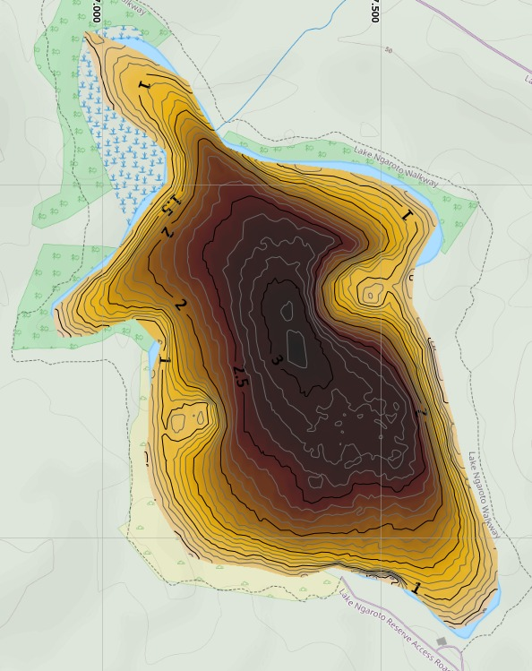
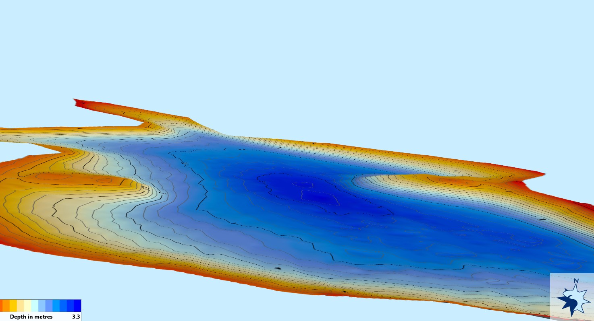
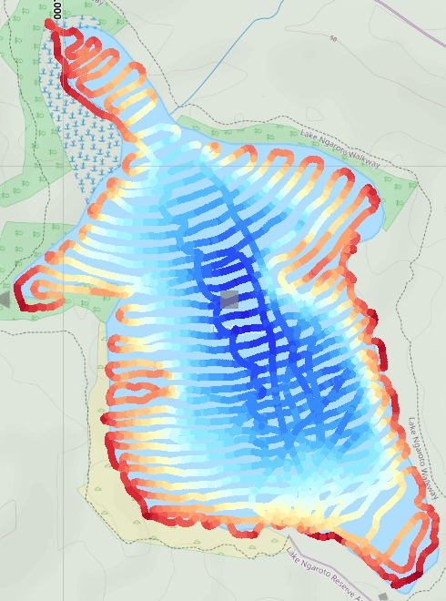
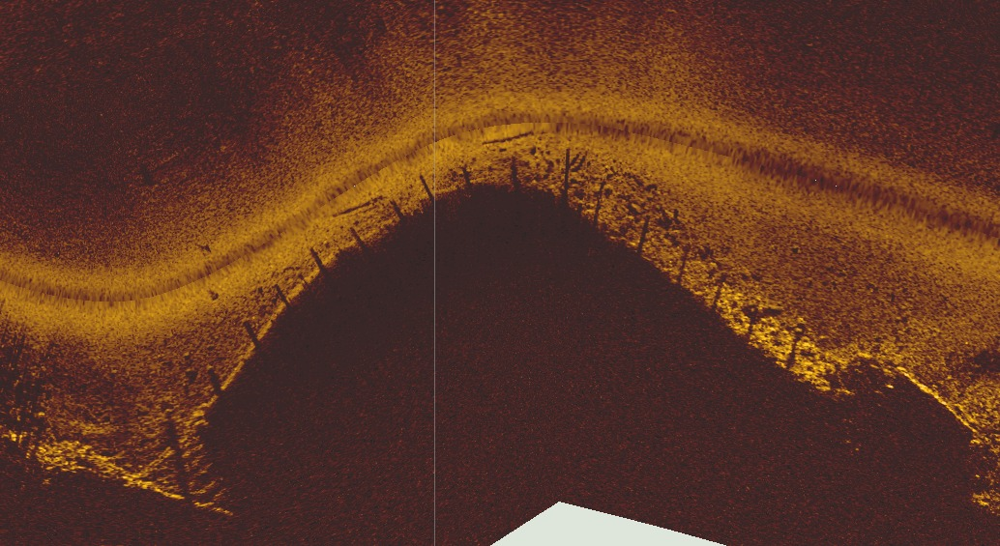
Features of Interest
- A large spoked structure that was 55m in length
- Plants detected in edges/shallows — possibly debris or marginal plants
- No plant life beyond 1.2–1.5m depth
- Sunken objects including boat-shaped structures
- Brightly coloured carp visible — water clarity nearly zero otherwise
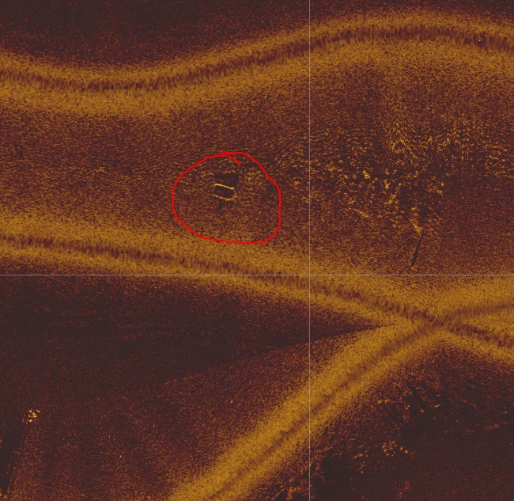
Next Steps
- Scan & Recording — simplify scanning for efficient, routine monitoring on consistent schedules to document longitudinal changes and seasonal trends
- Monitoring & Reporting — continuous water quality monitoring systems providing data for environmental experts to identify issues and causes
- Maintenance & Restoration — robotic systems for targeted pest species management, particularly carp culling, to minimise nutrient runoff and support sustainable lake quality improvement